三楼：：把我们当日本人耍 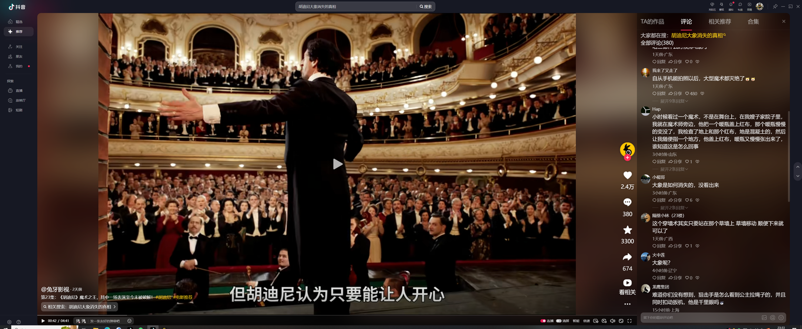
魔术带来的快乐在于表演神秘，而不是解密
然后国王虔诚的去查看这口钟，看见上面的弹孔陷入了沉思
我爷爷16岁参军，40岁晋升少将，从1931年到1955年用了24年。
好讽刺[憨笑]有时候一些丑的拍个照片记录生活被骂成什么样，长得好看的杀人都有人维护[憨笑][OK][黑脸]
一横露脸啦[色]好美好美[抱抱你]
这辈子没这么震惊过[愉快] 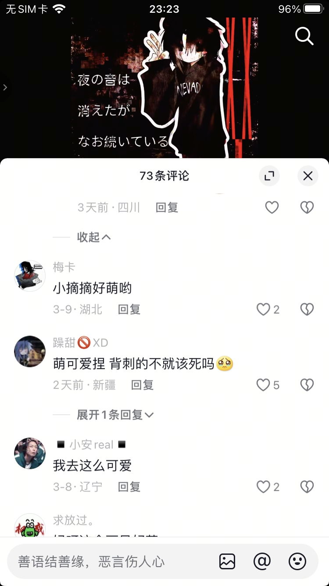
不管了，就当抗日看了[憨笑][赞]
喜欢砂仁饭的家里真得请高人了[憨笑][赞]
哈喽哈喽，这真的好看吗[愉快]（家里两位健在买了复活甲尿是哑光） 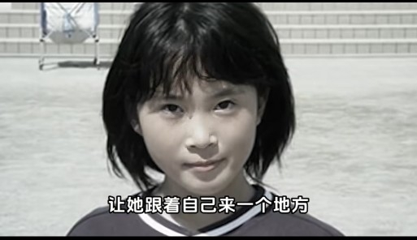
给她做同人动画的和cos的和那帮喜欢毒枭的有什么区别[憨笑][憨笑][憨笑][比心]
不是还有一个男版的嘛，被称为“最帅鲨人犯”，感觉追捧的同一批人
给同学当日本人整了[捂脸][OK]
说喜欢她的，敢和她交朋友吗[憨笑]
真的疯了能喜欢杀人犯的三观没问题我吃[憨笑]
辻菜摘抖音号多少
我一直以为三观跟着五官走只存在与二次元[暗中观察]
[捂脸]为啥我不觉得这个小女孩很好看，就是很大众的长像啊，就是实话实说的
日本这个地方多少有点说法[微笑]
其实我觉得这个小女孩长的挺普通的[黑脸]
所以那些人为什么要嘲笑她呢校园暴力真的是很痛苦的事
所以与人社交还是多说好话吧[黑脸]
还好给你备注了[微笑] 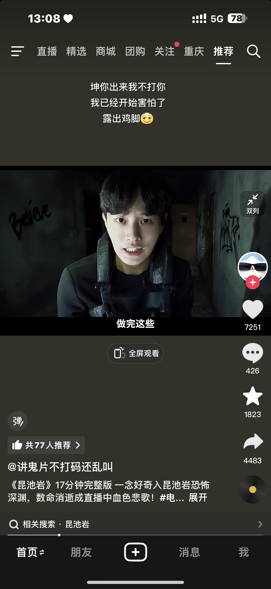
印象深刻的镜头就是，突然给一个女生突脸镜头，她带着超大的黑色美瞳开始rapper[捂脸][捂脸][捂脸]
当年昆池岩的女rapper真给我吓了一跳[憨笑][憨笑]
很多动植物都进化出了无敌的防御系统，但是架不住有人类这个bug生物[看]
狮子鱼：两脚兽，我和你不共戴天
用这么干净的塑料袋套着桶，就是让愿去捡的人捡的。充满人情味的地方。
司马一族导致了五胡乱华，当诛19族
据说司马懿死因是看诸葛亮写的书，诸葛亮知道自己死后自己的书会被司马懿研究，所以把每页都涂上毒，司马懿看书是舔手指死的
高中入学第一课就应该播放这个，因为我姐就是高一被骗的[微笑]
可以多看看美剧，看了之后会发现人生的容错率大的惊人。我并不觉得女主的人生毁了，她还很年轻，还有无限可能
女孩子第一步，别看言情小说，杜绝为爱生为爱死为爱生孩子
也是没赶上好时候[调皮]现在都鼓励边大学边生小孩儿了
我只能说女人包容性很强，女人爱上一个人真的很简单，很细小的点就会爱的死去活来。
大学的时候看到的这部电影，对我有很大的教育意义，太渴望被爱的人就会沉沦爱情的陷阱，越没有安全感的人越要靠自己的努力
都是低成本的感动
我一直不建议学生跟工作的人谈恋爱，任何一个在社会上待久的人，对一个孩子而言都会显得更有“智慧”，但这只是ta的阅历罢了
我二十的时候也差点被卖了[流泪][流泪][流泪] 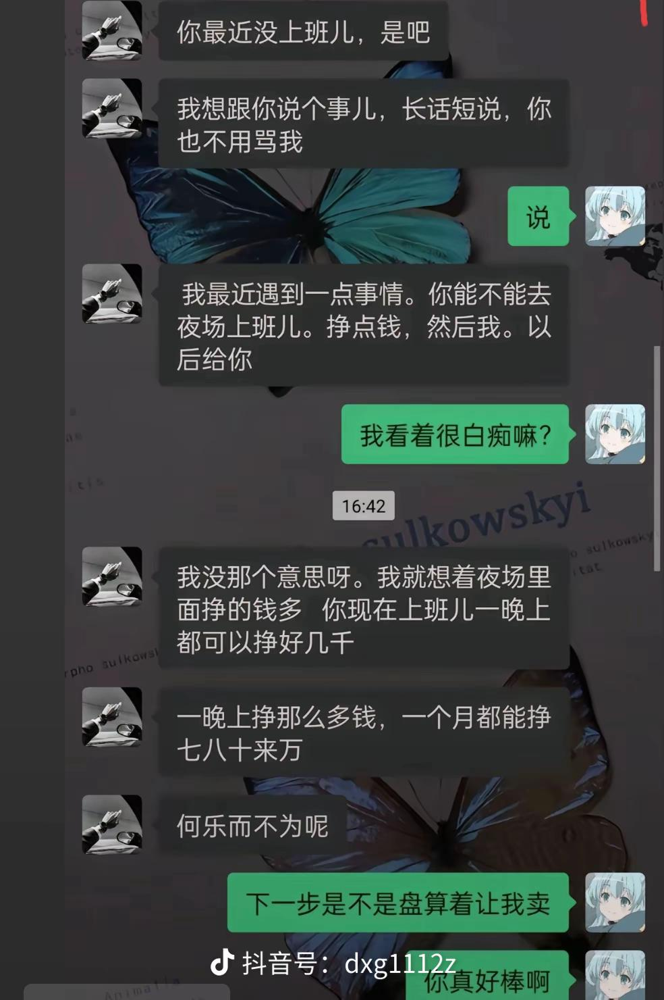
人生的容错率太大了，遇了个渣男就觉得自己人生完蛋了，这才是最蠢的，完蛋的是那个渣男，一辈子也就这样了他，你上过大学，年轻，有灵气，只要你想，你的人生永远不会完蛋
你不是被爱，你只是缺爱，然后闭上了自己的眼睛，在畸形的爱里头破血流。
睡觉不等于人生被毁 女生要做自己
果然，青春疼痛文学，看了还是会有共鸣的。这旁白文字，很郭敬明，很辛夷坞。
两个月前前任的现女友关注我了，我也回关了她，希望她能刷到这个视频和此评论，想告诉她“小姐姐，他家里有几百万负债，他出轨过，他会通过贬低别的男生衬托自己是个好男人，小姐姐，如果你是认真考虑跟他在一起，我劝你认真考虑[流泪]”（已点推荐）
我觉得最可笑的 女人这样就觉得自己人生完蛋了。至少现在这个时代，即便这样了，完蛋的是这个人贩子男人，而不是你
还好我是智性恋，不能接受比我学历低，家境比我差的的[逞强落泪]。不然宁愿孤独终老[逞强落泪]
身边也有女孩大学怀孕，但是学校按照特殊情况处理，直接请产假到毕业，毕业后听说和她老公一家住在几十平米的小房子里，不知道后来怎么样了。波伏娃说：“女人的不幸则在于被几乎不可抗拒的诱惑包围着；她不被要求奋发向上，只被鼓励滑下去到达极乐。当她发觉自己被海市蜃楼愚弄时，已经为时太晚，她的力量在失败的冒险中已被耗尽。”
因为从小没有被人爱过，所以别人对她一点好，她就把自己的全部交出去，以为是爱，结果是深渊
报告张教官，蓝啵王不请你吃饭就算了，他还顺了你的半个柑子[尬笑][尬笑][尬笑][尬笑] 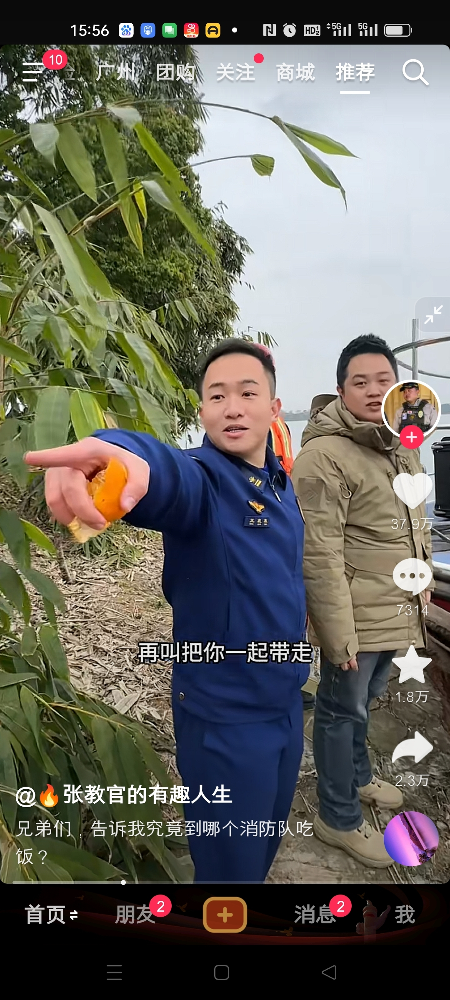
蓝啵王:只要你在四川我就逮你
成都消防，听说你们隔壁重庆消防车被偷了是真的吗？[偷笑]
张教官太牛了，真心地牛 上天入地下水无所不能，嘎嘎地 成都消防离了你，科目都练不成喽
谁让你坑花姐悬崖喝咖啡，我预言很准的，每次坑完花姐，成都消防必出现。
我有个问题，为啥张教官到哪里都能找到他，是定位了吗[捂脸][捂脸][捂脸]
张教官检查一下手机是不是被成都消防安了跟踪器[呲牙]每次都能精准找到你
小舅子被成都消防收编了，现在安排在张教官身边的定时炸弹[捂脸][捂脸]
哥，拿着这个视频，整个城市的消防队都吃一遍，反正又没说是哪个消防队的[泪奔][泪奔][泪奔][泪奔]
拿出视频，一个一个消防队问，你说这消防队欠我几顿饭[大笑][大笑][大笑]
[九转大肠]一毛一样 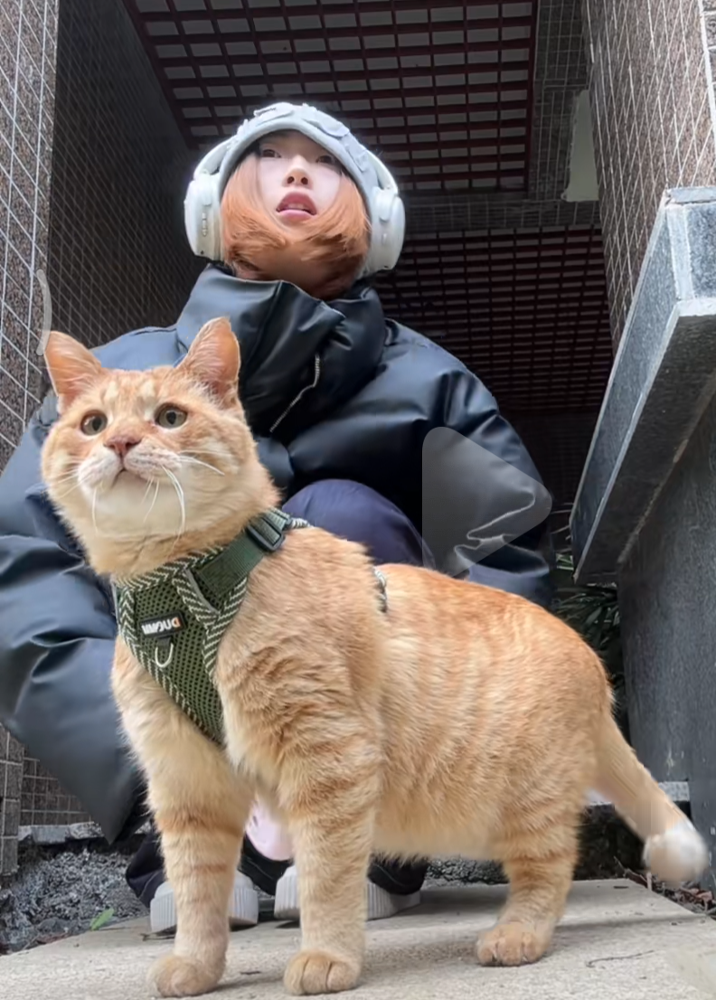
是亲妈，毛色都一样
你！昨！天！为！什！么！没！来！ 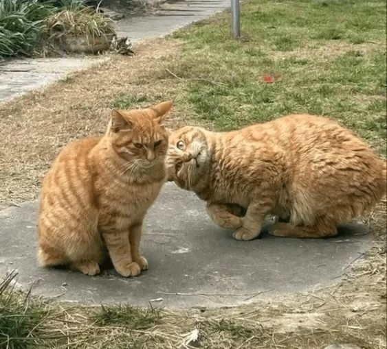
好可爱 怎么这么像 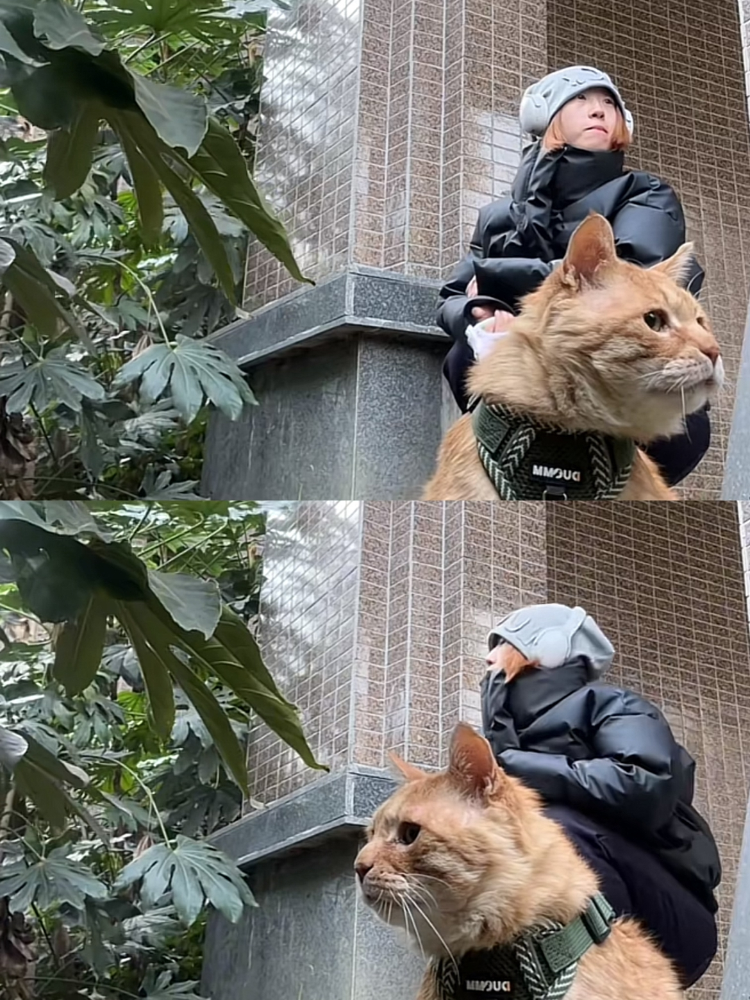
小猫没有表，它们不知道是几点，只知道我们约好的。
妈呀！我才知道这个那个找主人找三年的流浪猫大菊！
这眼神萌化了都 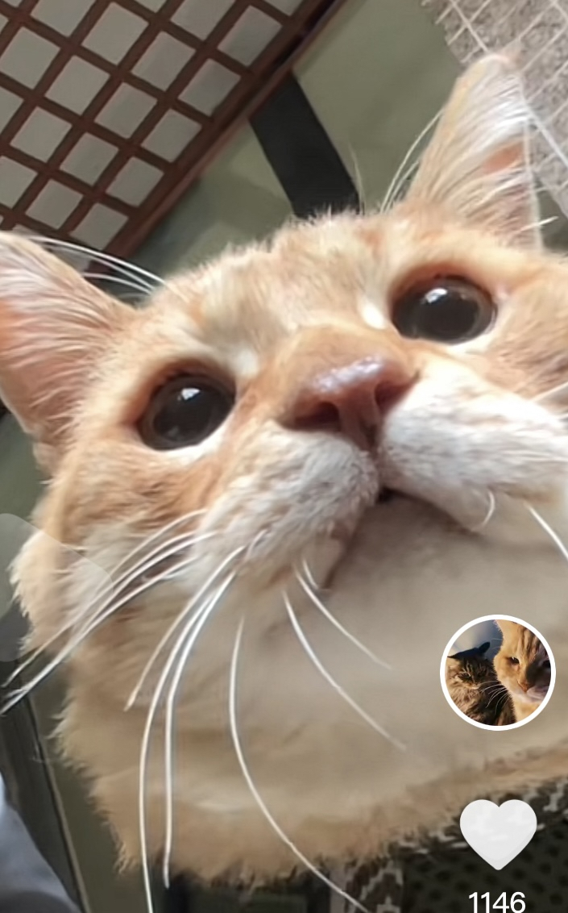
你瞅瞅这俩人的动静，一毛一样[泪奔][泪奔] 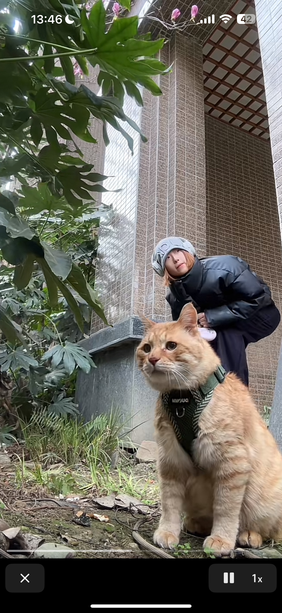
得亏小猫咪不会打电话，搁我朋友电瓶车已经开我床头了。[尬笑]
你俩越来越像了 怎么有人长得像小猫 怎么有小猫长得像人啊
我感觉它找不到朋友是因为它后面有一个大大的你[流泪]
以为是个普通的小橘猫结果开头这个视角把我萌翻了[害羞]圆圆的小眼睛，亮晶晶都[可怜][可怜][可怜][可怜] 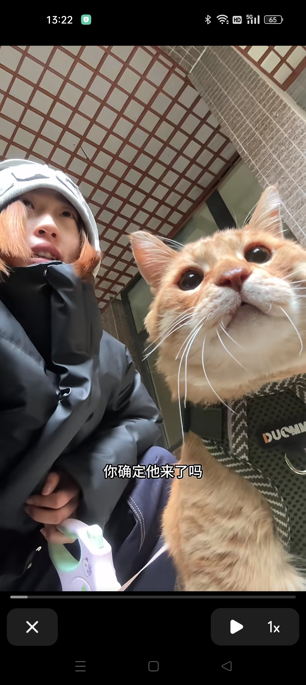
这小宝宝到底凶在哪里 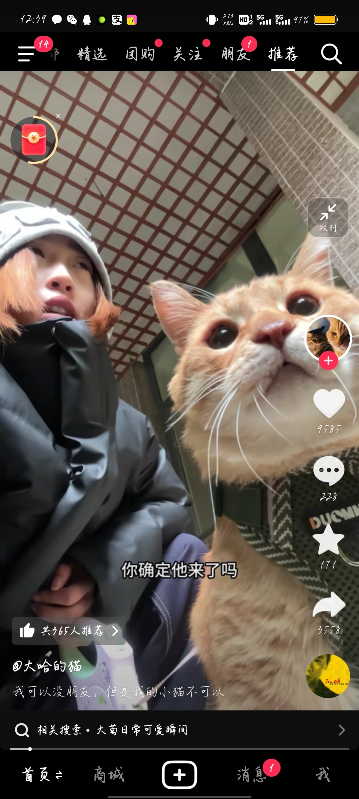
神同步[泪奔] 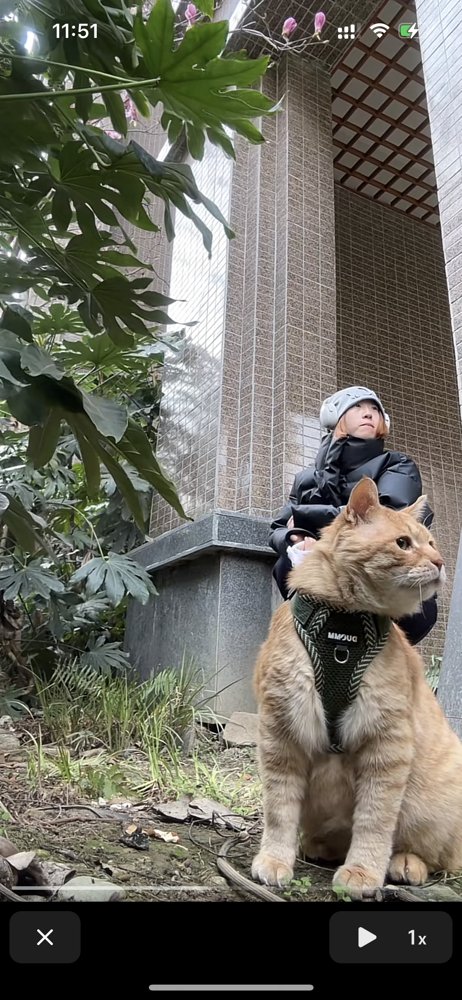
你俩动作一样[呲牙] 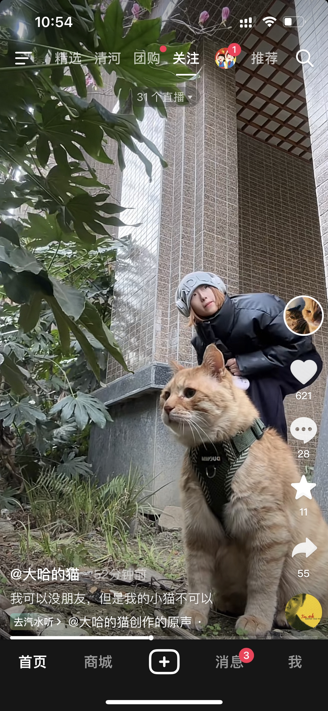
Read more: